import seaborn as sns
import numpy as np
import pandas as pd
import matplotlib.pyplot as plt
import gc
import osSeriation
インポート
# 自作関数のインポート
from seriation import save_clustermap_allsns.clustermapはデフォルトではmethod="single"(最近隣法), metric="euclidean"でクラスタリングを行う
下三角行列 + ノイズ の行・列をシャッフルしたデータフレーム
下三角行列+ノイズのデータフレームを作成
size = 15
df_tri = pd.DataFrame(np.tri(size)) * 10 + np.random.randn(size, size)
sns.heatmap(df_tri, cmap="coolwarm")<AxesSubplot: >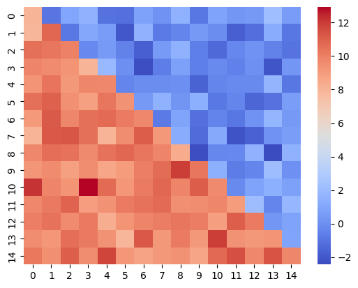
行と列をシャッフル
df_tri_shufful = df_tri.sample(frac=1.0).T.sample(frac=1.0)
sns.heatmap(df_tri_shufful, cmap="coolwarm")<AxesSubplot: >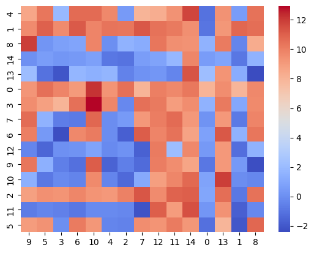
様々なmetricとmethodの組み合わせでclustermap
path_fig = "./fig/tri.png"
save_clustermap_all(df_tri_shufful, path_fig)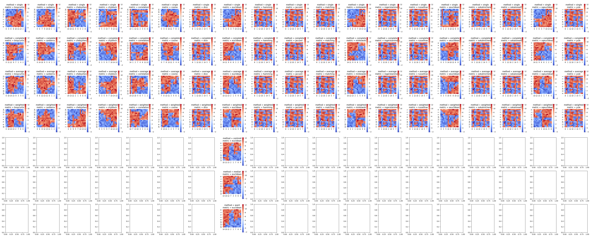
sns.get_dataset_names()['anagrams',
'anscombe',
'attention',
'brain_networks',
'car_crashes',
'diamonds',
'dots',
'dowjones',
'exercise',
'flights',
'fmri',
'geyser',
'glue',
'healthexp',
'iris',
'mpg',
'penguins',
'planets',
'seaice',
'taxis',
'tips',
'titanic']diamonds
df_diamonds: pd.DataFrame = sns.load_dataset("diamonds")
df_diamonds.head()| carat | cut | color | clarity | depth | table | price | x | y | z | |
|---|---|---|---|---|---|---|---|---|---|---|
| 0 | 0.23 | Ideal | E | SI2 | 61.5 | 55.0 | 326 | 3.95 | 3.98 | 2.43 |
| 1 | 0.21 | Premium | E | SI1 | 59.8 | 61.0 | 326 | 3.89 | 3.84 | 2.31 |
| 2 | 0.23 | Good | E | VS1 | 56.9 | 65.0 | 327 | 4.05 | 4.07 | 2.31 |
| 3 | 0.29 | Premium | I | VS2 | 62.4 | 58.0 | 334 | 4.20 | 4.23 | 2.63 |
| 4 | 0.31 | Good | J | SI2 | 63.3 | 58.0 | 335 | 4.34 | 4.35 | 2.75 |
df_diamonds.describe(include="all")| carat | cut | color | clarity | depth | table | price | x | y | z | |
|---|---|---|---|---|---|---|---|---|---|---|
| count | 53940.000000 | 53940 | 53940 | 53940 | 53940.000000 | 53940.000000 | 53940.000000 | 53940.000000 | 53940.000000 | 53940.000000 |
| unique | NaN | 5 | 7 | 8 | NaN | NaN | NaN | NaN | NaN | NaN |
| top | NaN | Ideal | G | SI1 | NaN | NaN | NaN | NaN | NaN | NaN |
| freq | NaN | 21551 | 11292 | 13065 | NaN | NaN | NaN | NaN | NaN | NaN |
| mean | 0.797940 | NaN | NaN | NaN | 61.749405 | 57.457184 | 3932.799722 | 5.731157 | 5.734526 | 3.538734 |
| std | 0.474011 | NaN | NaN | NaN | 1.432621 | 2.234491 | 3989.439738 | 1.121761 | 1.142135 | 0.705699 |
| min | 0.200000 | NaN | NaN | NaN | 43.000000 | 43.000000 | 326.000000 | 0.000000 | 0.000000 | 0.000000 |
| 25% | 0.400000 | NaN | NaN | NaN | 61.000000 | 56.000000 | 950.000000 | 4.710000 | 4.720000 | 2.910000 |
| 50% | 0.700000 | NaN | NaN | NaN | 61.800000 | 57.000000 | 2401.000000 | 5.700000 | 5.710000 | 3.530000 |
| 75% | 1.040000 | NaN | NaN | NaN | 62.500000 | 59.000000 | 5324.250000 | 6.540000 | 6.540000 | 4.040000 |
| max | 5.010000 | NaN | NaN | NaN | 79.000000 | 95.000000 | 18823.000000 | 10.740000 | 58.900000 | 31.800000 |
colorとclarityをクロス集計してヒートマップを作成する
(
df_diamonds[["color", "clarity"]]
.value_counts()
.unstack()
.pipe(sns.heatmap, cmap="coolwarm")
)<AxesSubplot: xlabel='clarity', ylabel='color'>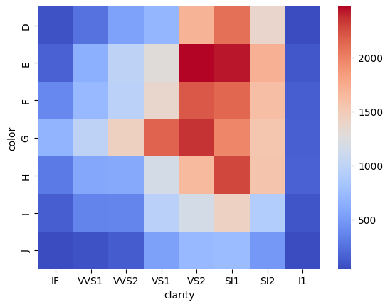
(
df_diamonds[["color", "clarity"]]
.value_counts()
.unstack()
.pipe(sns.clustermap, cmap="coolwarm", figsize=(5, 5))
)<seaborn.matrix.ClusterGrid at 0x7fb7b46a3c70>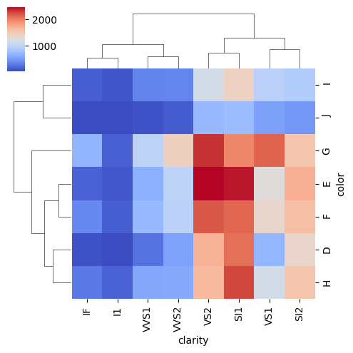
path_fig = "./fig/diamonds.png"
df_diamonds_crosstab = (
df_diamonds[["color", "clarity"]]
.value_counts()
.unstack()
)
save_clustermap_all(df_diamonds_crosstab, path_fig)/usr/local/lib/python3.10/dist-packages/seaborn/matrix.py:615: UserWarning: Attempting to set identical low and high xlims makes transformation singular; automatically expanding.
ax.set_xlim(0, max_dependent_coord * 1.05)
/usr/local/lib/python3.10/dist-packages/seaborn/matrix.py:623: UserWarning: Attempting to set identical low and high ylims makes transformation singular; automatically expanding.
ax.set_ylim(0, max_dependent_coord * 1.05)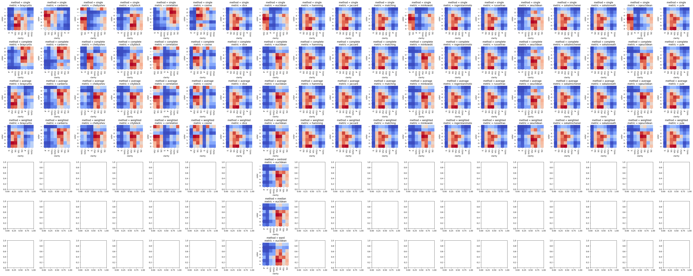
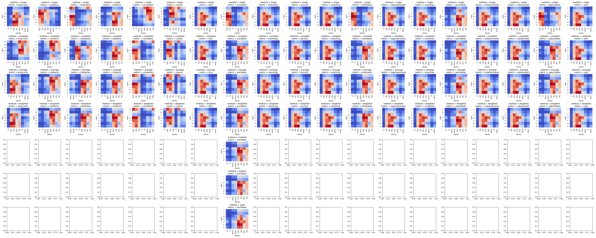
iris
df_iris: pd.DataFrame = sns.load_dataset("iris")
df_iris.head()| sepal_length | sepal_width | petal_length | petal_width | species | |
|---|---|---|---|---|---|
| 0 | 5.1 | 3.5 | 1.4 | 0.2 | setosa |
| 1 | 4.9 | 3.0 | 1.4 | 0.2 | setosa |
| 2 | 4.7 | 3.2 | 1.3 | 0.2 | setosa |
| 3 | 4.6 | 3.1 | 1.5 | 0.2 | setosa |
| 4 | 5.0 | 3.6 | 1.4 | 0.2 | setosa |
df_iris.describe()| sepal_length | sepal_width | petal_length | petal_width | |
|---|---|---|---|---|
| count | 150.000000 | 150.000000 | 150.000000 | 150.000000 |
| mean | 5.843333 | 3.057333 | 3.758000 | 1.199333 |
| std | 0.828066 | 0.435866 | 1.765298 | 0.762238 |
| min | 4.300000 | 2.000000 | 1.000000 | 0.100000 |
| 25% | 5.100000 | 2.800000 | 1.600000 | 0.300000 |
| 50% | 5.800000 | 3.000000 | 4.350000 | 1.300000 |
| 75% | 6.400000 | 3.300000 | 5.100000 | 1.800000 |
| max | 7.900000 | 4.400000 | 6.900000 | 2.500000 |
df_iris_corr = df_iris.select_dtypes("number").corr()
sns.heatmap(df_iris_corr, cmap="coolwarm")<AxesSubplot: >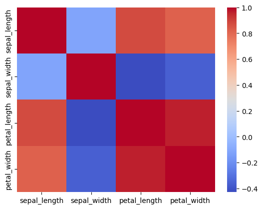
df_iris_corr = df_iris.select_dtypes("number").corr()
sns.clustermap(
df_iris_corr,
cmap="coolwarm",
method="single",
metric="euclidean",
figsize=(5, 5),
)<seaborn.matrix.ClusterGrid at 0x7fb7ac17f130>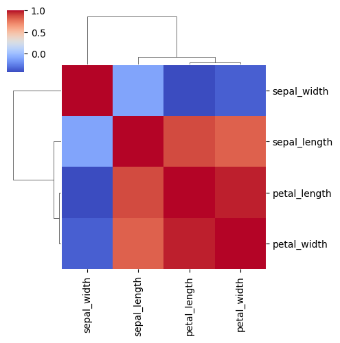
path_fig = "./fig/iris.png"
save_clustermap_all(df_iris_corr, path_fig)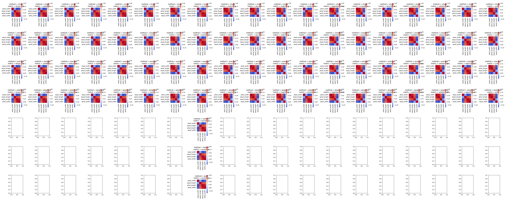
tips
df_tips: pd.DataFrame = sns.load_dataset("tips")
df_tips.head()| total_bill | tip | sex | smoker | day | time | size | |
|---|---|---|---|---|---|---|---|
| 0 | 16.99 | 1.01 | Female | No | Sun | Dinner | 2 |
| 1 | 10.34 | 1.66 | Male | No | Sun | Dinner | 3 |
| 2 | 21.01 | 3.50 | Male | No | Sun | Dinner | 3 |
| 3 | 23.68 | 3.31 | Male | No | Sun | Dinner | 2 |
| 4 | 24.59 | 3.61 | Female | No | Sun | Dinner | 4 |
df_tips.describe(include="all")| total_bill | tip | sex | smoker | day | time | size | |
|---|---|---|---|---|---|---|---|
| count | 244.000000 | 244.000000 | 244 | 244 | 244 | 244 | 244.000000 |
| unique | NaN | NaN | 2 | 2 | 4 | 2 | NaN |
| top | NaN | NaN | Male | No | Sat | Dinner | NaN |
| freq | NaN | NaN | 157 | 151 | 87 | 176 | NaN |
| mean | 19.785943 | 2.998279 | NaN | NaN | NaN | NaN | 2.569672 |
| std | 8.902412 | 1.383638 | NaN | NaN | NaN | NaN | 0.951100 |
| min | 3.070000 | 1.000000 | NaN | NaN | NaN | NaN | 1.000000 |
| 25% | 13.347500 | 2.000000 | NaN | NaN | NaN | NaN | 2.000000 |
| 50% | 17.795000 | 2.900000 | NaN | NaN | NaN | NaN | 2.000000 |
| 75% | 24.127500 | 3.562500 | NaN | NaN | NaN | NaN | 3.000000 |
| max | 50.810000 | 10.000000 | NaN | NaN | NaN | NaN | 6.000000 |
性別x喫煙者と曜日x時間帯でチップの額をクロス集計したものをヒートマップでみてみる
(
df_tips.pivot_table(
columns=["day", "time"],
index=["sex", "smoker"],
values="tip",
aggfunc="mean",
fill_value=0,
).pipe(sns.heatmap, cmap="coolwarm", annot=True)
)<AxesSubplot: xlabel='day-time', ylabel='sex-smoker'>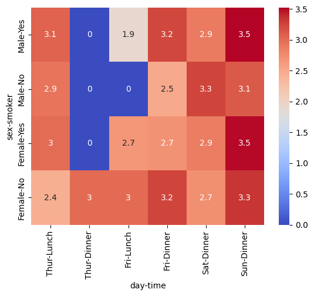
(
df_tips.pivot_table(
columns=["day", "time"],
index=["sex", "smoker"],
values="tip",
aggfunc="mean",
fill_value=0,
).pipe(sns.clustermap, figsize=(5, 5), cmap="coolwarm", annot=True)
)<seaborn.matrix.ClusterGrid at 0x7fb7ac2125c0>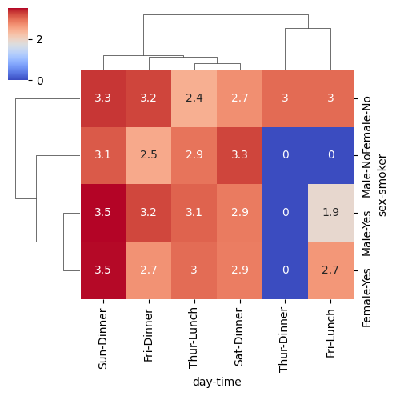
- 人の属性の軸(sex-smoker)
- 性別よりも喫煙者か否かのほうが関係が深い
- 時間の軸(day-time)
- Dinnerはtipが多く、Lunchは少ない傾向にあるが、木曜日はその逆になっている